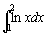

高斯-克朗羅德十一點定積分(I)
程式編寫日期: 2008年3月30日
以下程式使用了高斯-克朗羅德法十一點方法(Gauss-kronrod Quadrature)計算一個定積分的近似值，高斯-克朗羅德法為高斯-勒讓德法(Gauss-Legendre Quadrature)的改良版本，效果更理想，現時不少圖像計算機都是使用這個方法計算定積分的近似值。
程式 (264 bytes，不包括綠色的函數方程)
Mem clear: ?→A: ?→B: 2-1(B - A→B:
Lbl 0: A + B + BX: ln Ans: Ans ( . 2829874179(Y=0)
+ . 0425820368(Y2+2=3Y) + . 1152333166(Y>2)(5>Y)
+ . 1868007966(Y>4)(7>Y) + . 2410403392(Y>6)(9>Y)
+ . 2728498019(Y>8M+: 1+Y→Y: -X→X:
Y=1 => . 9840853601→X: Y=3 => . 9061798459→X:
Y=5 => . 7541667266→X: Y=7 => . 5384693101→X:
Y=9 => . 2796304132→X: Y-11 => Goto 0: MB
註: 綠色的 ln Ans是函數方程(變數是Ans)，若果想計算其它函數的積分，只要修改綠色的部份。
例題: 利用高斯-克朗羅德十一點方法(Gauss-kronrod Quadrature)，計算 
按 Prog 1 再按 1 EXE 2 EXE (顯示答案為0.386294361)
參考資料:
http://mathworld.wolfram.com/Legendre-GaussQuadrature.html
http://en.wikipedia.org/wiki/Gaussian_quadrature